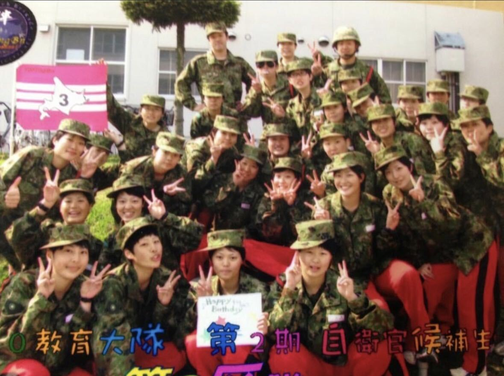
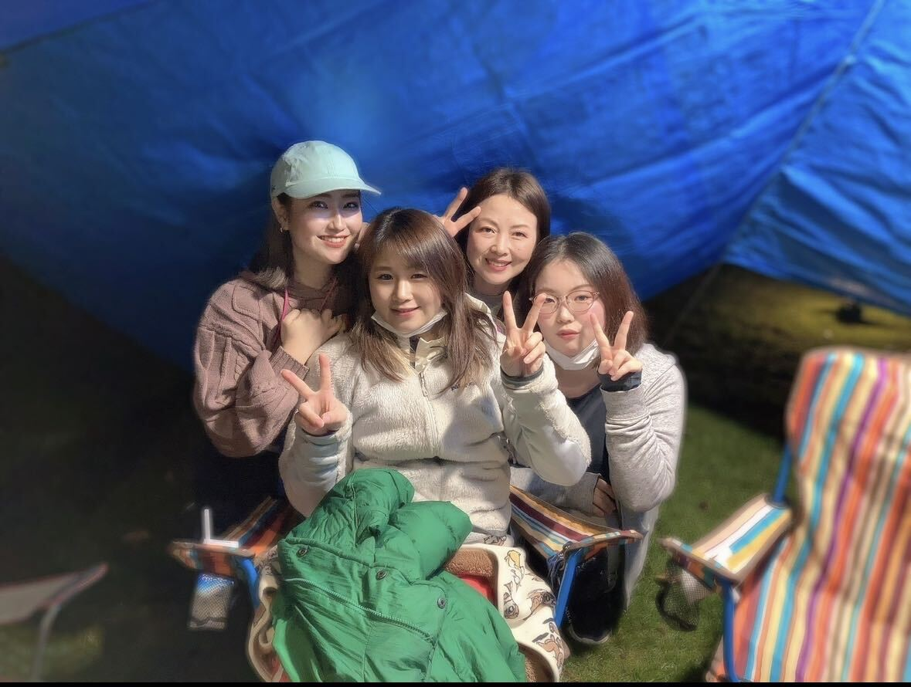
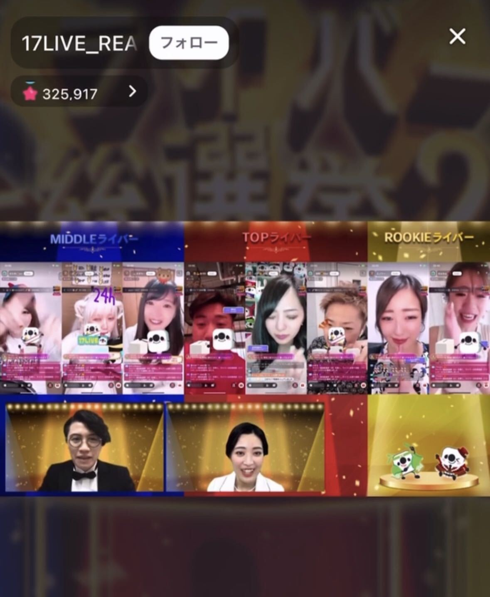
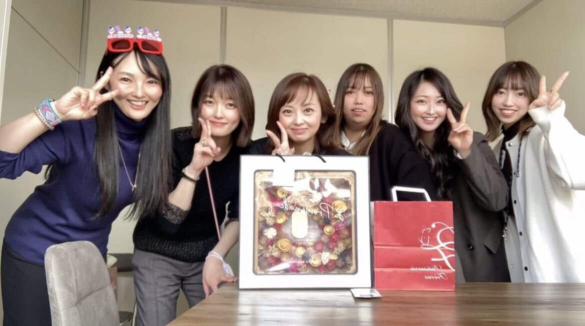

My Career

陸上自衛隊
3か月の基訓練(体力錬成、射撃、銃の分解結合、 基礎訓練)を学ぶ。実際に第5匍匐前進まで使い実践訓練も行った。 その後3か月それぞれの配属先での専門訓練を行う。 (通信科のためモールス信号やアンテナ建柱) 計6か月の訓練が終わり正式に配属され、 訓練・整備・体力錬成を繰り返し行っていた。
医療事務
受付、会計業務を担当。ここで病院勤務の基礎を教わった。 紙カルテのため医師の指示通りに処方の薬剤や、検査を PC入力し領収書、明細書、処方箋を発行。札幌市の検診や、 診断書等の書類管理、物品管理も行っていた。レセプトチェックも 全て目視と手作業のため、どの病名で何の薬が処方されるかも 効率良く行うために覚えた。

医師事務作業補助者
1か月病院の受付業務を担当し、病院のやり方や外来の流れ、 病院が行っている検査等理解し、その後医師事務作業補助者へ。 11人の先生のやり方を覚え、診察室に常時付き、それぞれの進め方に応じ 電子カルテに検査入力や医師の記入漏れを入力する。 医師が記入する全ての診断書を代行記載していた。 定時で上がるために作業中はコミュニケーションを取り、 チームとして勤務していた。

ライバー
病院勤務と並行し活動。主に雑談配信し、投げ銭してもらっていた。 たくさんあるイベントの中、月2回程参戦し、応援してもらっていた。 長時間配信ができない私のためにリスナーが協力してくれ、 毎日2時間配信、生活出来る収入レベルまで達した。 大人になって初めて顔も知らない方に応援してもらえて、 改めて何かを頑張ることの素晴らしさと幸せを感じた。

保険営業
国内、外資、代理店で保険営業を行い、医療、死亡、積立、 就労不能の保険と種類を理解した。 保険の基礎知識を学び、自分に必要なものも明確化された。 また約41社の保険商品を覚え、営業で相手のニーズを把握し、 ヒアリング力を身に付け、お客様の求めているものを 提供出来るようになった。